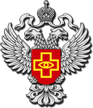

Шрифт:
Нормальный
/
Большой
Тема:
Светлая
/
Темная
/
Обычная

Федеральная служба
по надзору в сфере здравоохранения
Версия для слабовидящих
En
|
Ru
Новости
Документы
Приемная руководителя
Обращения
Карта сайта
Карта регионов
Контакты
Территориальные органы Росздравнадзора
О Федеральной службе
Противодействие коррупции
Контрольно-надзорные мероприятия Росздравнадзора
Государственные программы
Документы
Медицинская помощь населению
Медицинские изделия (изделия медицинского назначения)
Лекарственные средства
Лицензирование в сфере здравоохранения
Административные регламенты
Автоматизированные информационные системы и системы внесения сведений
Общественный совет по защите прав пациентов при Федеральной службе по надзору в сфере здравоохранения
Реализация Федерального закона от 08.05.2010 №83-ФЗ
Экспертиза проектов нормативных правовых актов
Предоставление государственных услуг в соответствии с положениями Федерального закона от 27 июля 2010 года № 210-ФЗ "Об организации предоставления государственных и муниципальных услуг"
Ответы на часто задаваемые вопросы
Открытые данные